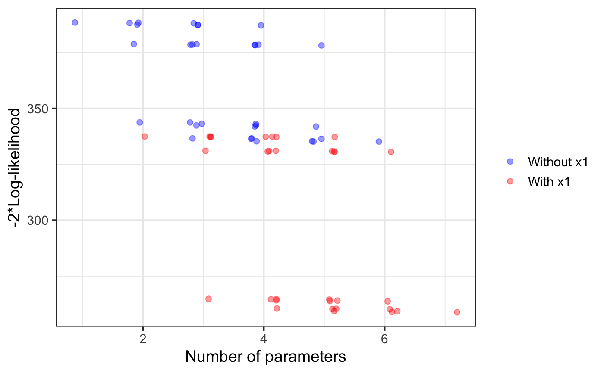
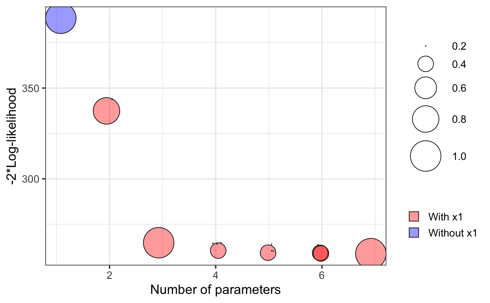
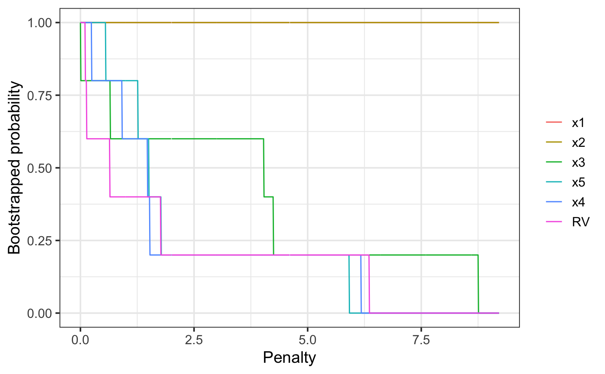

A plot method to visualise the results of a vis object.
# S3 method for vis
plot(
x,
highlight,
interactive = FALSE,
classic = NULL,
tag = NULL,
shiny = FALSE,
nbest = "all",
which = c("vip", "lvk", "boot"),
width = 800,
height = 400,
fontSize = 12,
left = 50,
top = 30,
chartWidth = "60%",
chartHeight = "80%",
axisTitlesPosition = "out",
dataOpacity = 0.5,
options = NULL,
ylim,
legend.position = "right",
backgroundColor = "transparent",
text = FALSE,
min.prob = 0.4,
srt = 45,
max.circle = 15,
print.full.model = FALSE,
jitterk = 0.1,
seed = NULL,
...
)| x |
|
|---|---|
| highlight | the name of a variable that will be highlighted |
| interactive | logical. If |
| classic | logical. Depricated. If |
| tag | Default NULL. Name tag of the objects to be extracted from a gvis (googleVis) object. The default tag for is NULL, which will
result in R opening a browser window. Setting |
| shiny | Default FALSE. Set to TRUE when using in a shiny interface. |
| nbest | maximum number of models at each model size
that will be considered for the lvk plot. Can also take
a value of |
| which | a vector specifying the plots to be output. Variable
inclusion plots |
| width | Width of the googleVis chart canvas area, in pixels. Default: 800. |
| height | Height of the googleVis chart canvas area, in pixels. Default: 400. |
| fontSize | font size used in googleVis chart. Default: 12. |
| left | space at left of chart (pixels?). Default: "50". |
| top | space at top of chart (pixels?). Default: "30". |
| chartWidth | googleVis chart area width.
A simple number is a value in pixels;
a string containing a number followed by |
| chartHeight | googleVis chart area height.
A simple number is a value in pixels;
a string containing a number followed by |
| axisTitlesPosition | Where to place the googleVis axis titles, compared to the chart area. Supported values: "in" - Draw the axis titles inside the the chart area. "out" - Draw the axis titles outside the chart area. "none" - Omit the axis titles. |
| dataOpacity | The transparency of googleVis data points, with 1.0 being completely opaque and 0.0 fully transparent. |
| options | a list to be passed to the googleVis function giving
complete control over the output. Specifying a value for
|
| ylim | the y limits of the lvk and boot plots. |
| legend.position | the postion of the legend for classic plots.
Default |
| backgroundColor | The background colour for the main area of the chart. A simple HTML color string, for example: 'red' or '#00cc00'. Default: 'null' (there is an issue with GoogleCharts when setting 'transparent' related to the zoom window sticking - once that's sorted out, the default will change back to 'transparent') |
| text | logical, whether or not to add text labels to classic
boot plot. Default = |
| min.prob | when |
| srt | when |
| max.circle | determines the maximum circle size. Default = 15. |
| print.full.model | logical, when |
| jitterk | amount of jittering of the model size in the lvk and boot plots. Default = 0.1. |
| seed | random seed for reproducible results |
| ... | further arguments (currently unused) |
Specifying which = "lvk" generates a scatter plot where
the points correspond to description loss is plot against model size
for each model considered. The highlight argument is
used to differentiate models that contain a particular variable
from those that do not.
Specifying which = "boot" generates a scatter plot where
each circle represents a model with a non-zero bootstrap probability,
that is, each model that was selected as the best model of a
particular dimension in at least one bootstrap replication.
The area of each circle is proportional to the
corresponding model's bootstrapped selection probability.
Mueller, S. and Welsh, A. H. (2010), On model selection curves. International Statistical Review, 78:240-256. doi: 10.1111/j.1751-5823.2010.00108.x
Murray, K., Heritier, S. and Mueller, S. (2013), Graphical tools for model selection in generalized linear models. Statistics in Medicine, 32:4438-4451. doi: 10.1002/sim.5855
Tarr G, Mueller S and Welsh AH (2018). mplot: An R Package for Graphical Model Stability and Variable Selection Procedures. Journal of Statistical Software, 83(9), pp. 1-28. doi: 10.18637/jss.v083.i09
n = 100
set.seed(11)
e = rnorm(n)
x1 = rnorm(n)
x2 = rnorm(n)
x3 = x1^2
x4 = x2^2
x5 = x1*x2
y = 1 + x1 + x2 + e
dat = data.frame(y,x1,x2,x3,x4,x5)
lm1 = lm(y~.,data=dat)
# \dontshow{
v1 = vis(lm1, B = 5, cores = 1, seed = 1)
plot(v1, highlight = "x1", which = "lvk")

plot(v1, which = "boot")

plot(v1, which = "vip")

# }
if (FALSE) {
v1 = vis(lm1, seed = 1)
plot(v1, highlight = "x1", which = "lvk")
plot(v1, which = "boot")
plot(v1, which = "vip")
}